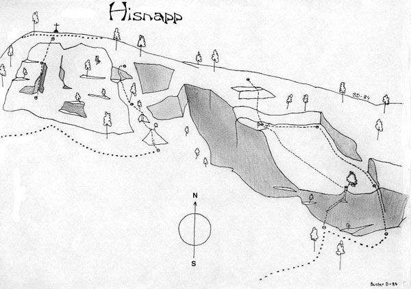

Hisnopp, eller Hisnapp som det heter på en del kartor, är det stora distinkta berget närmast väster om Bodberget.
På flera ställen på sydväggen på Hisnopp bildas is vintertid. Hisnopp är berget till vänster om Bodberget ovanför byn Flästa. Här har några mixade turer gjorts.
Kategori:Saknar karta
Kategori:Saknar leder
Kategori:Hälsingland
Copyright (C) Permission is granted to copy, distribute and/or modify this document under the terms of the GNU Free Documentation License, Version 1.3